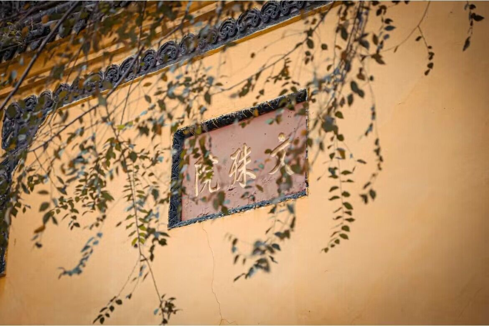
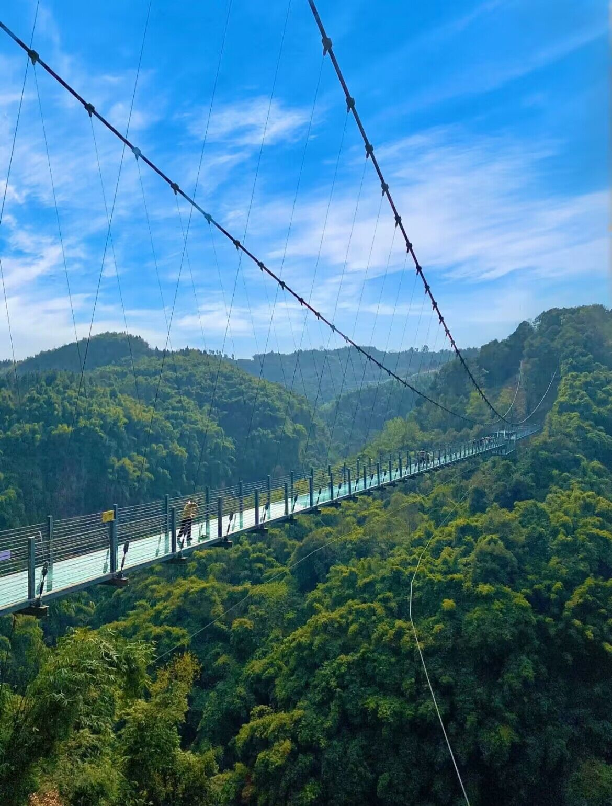
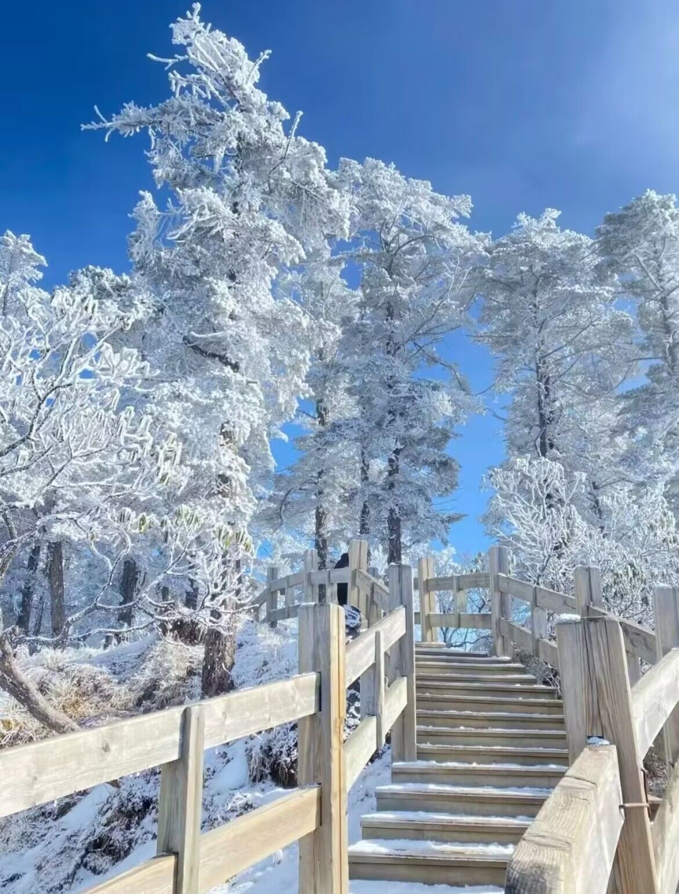

-
多喜乐.长安宁
文殊院是成都历史悠久、香火自兴盛的佛教圣地，是中国长江上下游四大禅林之首，集禅林圣迹、园林古建、朝拜观光、宗教修学于一体。
相对于市区热门的锦里和宽窄巷子来说，文殊院算是市井中难得有的清净之地，可以感悟博大精深的佛文化，可以再一隅的香园茶楼喝茶，也可以逛园林偷得浮生半日闲章。
个人觉得十一月中旬是文殊院最美的季节，找个出太阳的周末悠哉游哉的逛逛，看了秋色，也领略了佛文化的源远流长。这里也有值得拍照打卡的地方尚，文殊院门口两侧的红墙印着金色的大字，在正黄的银杏叶心点缀下，多了些许文艺的色彩。
查看更多 -
一路向西，自驾畅游川西全攻略
在路上时, 听到两位陌生人交谈, 其中一位说到她喜欢来川西的理由，每一次来都会遇见新的风景, 川西的一年四季都是不同的,各有各的美。对此，我深以为然。 秋天的川西宛若一幅油画，层林尽染， 在开往亚拉雪山的路上， 我遇见了太多太多美好的景色。 旅行对于我来说是一种生活方式，我很幸运还保有勇气， 能自在的游走于山川湖海，天地之间,感受大自然的壮阔、无言之美。
查看更多 -
一次妻子的浪漫旅行的成都之行
川西竹海距离平乐古镇车程10几分钟，妻子的浪漫旅行5的第一站，十万亩竹海氧吧，超级适合夏日游玩，景区清凉舒适，还可以玩水 游︰金鸡桥、呐喊泉、深谷栈道、高空观景平台、仙侣牧云桥、玻璃栈道....... 玩∶缘定桥祈愿、竹海飞拉达、竹海管轨式滑道 吃喝︰竹海特色美食、小吃、饮品 上山下山总共3小时左右，竹林中小溪上空的烟雾仙气飘飘的，拍照特别好看，林中空气超级好，小溪流的水冰冰凉凉，夏天来玩水简直不要太爽。
查看更多 -
冬游西岭-2023的第一场旅行
“窗含西岭千秋雪，门泊东吴万里船”
冬雪已至，诗圣杜甫所描绘的画面已经显现豢 云海、日出、佛光、雪山......你想看的美景这里都有 西岭雪山的滑雪场也是全国最温暖的滑雪场点更重要的是，西岭雪山离成都市区车程仅2小时!一日时间即可打卡这座“东方的阿尔卑斯山”!
查看更多